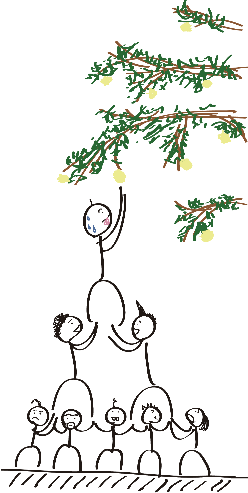

This week we are given a list of words to choose from. The extensive list has many good words that I care about and I chose accountability. Because each individual has limited power, a lot of great things are done in collaboration. Having accountability is essential to establish trust among human and make sure something won’t fall apart. Also in a long run, building a trusted image is important to keep the ball rolling. It is something I believe in.I remember the last time when my friend asked me an advice about career direction. I quickly share my thoughts about being a programmer because I enjoy what I’m doing right now. I’m not sure how my values relate to stereotype threat. When it comes, I’m not afraid to confront it. I think I’m emotionally strong enough for stress and pressure. I don’t really understand the weekly cultural assignment part at DBC.
